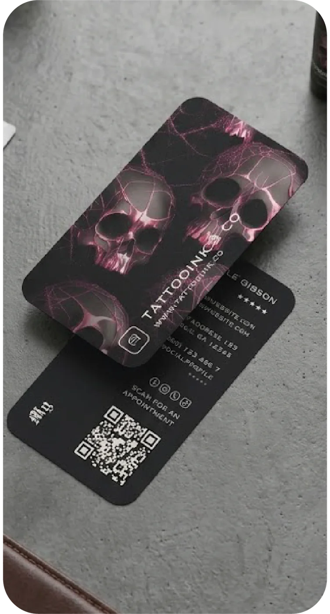

Diseño personalizado
Composición basada en tu marca, con jerarquía legible y archivos preparados para producción.
Identidad en formato tangible
Creamos tarjetas personales y tarjetas de negocio que organizan tus datos, respetan tu identidad y pueden integrar un código QR hacia WhatsApp, catálogo o sitio web.
Diseño y producción
El formato, el material y el acabado se eligen después de revisar la identidad, la cantidad de información y la forma de entrega.
Composición basada en tu marca, con jerarquía legible y archivos preparados para producción.
El tamaño y la orientación se definen según el contenido, el uso y las especificaciones de impresión.
Las opciones se confirman con la producción disponible y el resultado visual buscado.
Muestras visuales
Referencias del archivo de CRK Publicity para ilustrar variedad de estilo, color y composición.
 Identidad premiumKHALOPresentación y bono regalo
Identidad premiumKHALOPresentación y bono regalo
Identidad visualTattoo InkTarjeta con código QR Dirección visualJewelReferencia de portafolio
Dirección visualJewelReferencia de portafolioEvita correcciones tardías
Teléfono, correo, redes, ortografía y enlaces deben quedar confirmados por el cliente. Una revisión final reduce errores que no pueden corregirse después de producir.
Preguntas frecuentes
Sí. Revisamos la calidad del archivo y proponemos una composición acorde con la información que debe llevar la tarjeta.
Sí. Indica la cantidad que necesitas; confirmamos formato, caras, material, acabado y disponibilidad antes de darte el precio final.
Sí. El enlace debe estar definido y se comprueba antes de producción. El QR necesita tamaño y contraste adecuados.
La cantidad, el número de caras, el material, el acabado y los ajustes de diseño. Por eso la cotización se prepara después de confirmar esos datos.
Podemos evaluar un alcance de diseño digital. El formato de entrega y los derechos de uso se acuerdan antes de iniciar.
Datos listos
Cuéntanos también cuántas tarjetas necesitas y qué estilo tienes en mente.
Continúa tu identidad